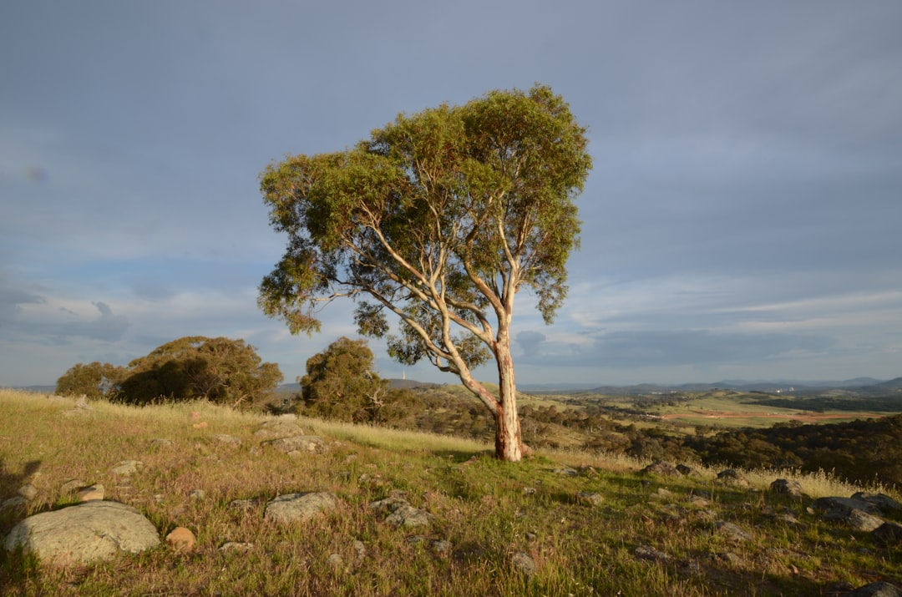

For Canberra tree work, the useful first answer is not a price from height alone. The source guide puts the job through four checks: ownership and immediate risk, protected status, practical scope, and like-for-like written comparison. Public trees are protected, and private trees may be protected under the Urban Forest Act 2023. Removal, pruning, stump grinding, assessment, urgent work and hedge maintenance should be separated before quotes are compared.
For homeowners comparing tree removal canberra options, the practical task is to confirm status, access, stump requirements and written inclusions before treating removal as the only answer.
Tree Removal Canberra Explained
Top Tree Removal Canberra frames tree work as a decision sequence: identify ownership, check protected status, define the practical scope, then compare written responses. That order matters because the same tree may call for removal, selective pruning, deadwooding, stump work or an arborist assessment, depending on condition and the outcome sought.
The source page is careful about what it can and cannot prove. It offers ACT-specific planning information, but does not itself inspect trees or promise attendance. Qualifications, insurance, memberships and availability need to be checked with the actual operator being considered.
Use the enquiry stage to separate permission questions from access questions. A provider can assess the job more usefully when whole-tree photos, trunk photos, the access route, nearby roofs, fences, services and the desired end result are described together.
Who This Applies To
This guide applies to private residents preparing a Canberra tree enquiry, especially where ownership, protected status, access or stump expectations are uncertain. It is also relevant when storm damage, deadwood, clearance pruning or a structurally compromised tree has made the next step feel urgent.
- Use it when you need to decide between removal, pruning, assessment, stump grinding or urgent make-safe work.
- Use it before asking for quotes where the stump, logs, mulch, grindings, backfill or clean-up could change the written scope.
- Use it when a public tree, private tree or potentially protected tree status has not yet been checked.
The guide does not replace provider-level proof. Ask the eventual contractor to confirm their credentials, insurance, method, exclusions and availability in writing before work is accepted.
ACT Status Checks Before Major Work
The source page states that all public trees are protected. It also says a private tree may be protected under ACT rules, including by size, registration or other qualifying conditions under the Urban Forest Act 2023. A dead native tree can still require care in the status check.
For private trees, the practical checkpoint is to use current City Services guidance and ACTmapi before arranging removal or major pruning. For street trees or other public trees, residents should not prune or remove them themselves, and the issue should be handled through the public-tree reporting path identified by the relevant authority.
Protected status should be checked before quote comparison, not after a preferred provider is chosen. If status is unclear, ask the provider what evidence they need, whether an arborist assessment is appropriate, and whether a tree activity application may be required before work proceeds.
Scope Inputs That Change A Quote
A useful written response needs more than a height estimate. The source guide asks for the suburb, the reason work is being considered, whole-tree and trunk photos, gate or access width, visible lines, nearby structures, slope and the result wanted. These details help distinguish a straightforward pruning discussion from a removal job with rigging, waste and repair questions.
Stump work deserves its own line item. If grinding is requested, define grinding depth, access to the stump, surface roots, grindings and backfill before the area is reused. If stump removal is not part of the job, make that exclusion visible so competing responses can be compared fairly.
Waste is another scope point that changes expectations. State whether logs, mulch, green waste and final clean-up are included. A shorter quote may not be cheaper if it excludes disposal or leaves site repair undefined.
For another concise version of the same planning theme, see this Canberra tree-work decision guide.
Removal, Pruning Or Assessment
Removal may suit a dead, structurally compromised or unsuitable tree, but the source page does not present it as the default answer. Selective pruning may suit deadwood, clearance or canopy objectives. An arborist assessment may be the right first step where health, risk, protected-tree status or development questions affect the decision.
Urgent work should still be scoped. The guide names fallen or storm-damaged trees, electrical risk and make-safe work as situations where triage comes first. It also tells residents to keep people clear of an unsafe area and treat overhead or fallen electrical lines as a separate hazard.
When comparing providers, ask each one to put method, approvals, credentials, insurance, inclusions, exclusions and site repair in writing. That keeps the comparison focused on the same tree and the same expected outcome.
- Identify ownership. Confirm whether the tree is on private land, public land or uncertain land before asking anyone to prune or remove it.
- Check status. Use current ACT guidance, ACTmapi and any register or application pathway before arranging major work on a potentially protected tree.
- Document the site. Collect whole-tree photos, trunk photos, access width, nearby structures, visible lines, slope and the outcome wanted.
- Separate inclusions. State whether pruning, removal, stump grinding, logs, mulch, green waste, backfill and final clean-up are included.
- Compare written responses. Ask each provider to confirm method, approvals, credentials, insurance, exclusions, site repair and availability in writing.
| Situation | Likely next question | Scope detail to record |
|---|---|---|
| Possible public or protected tree | Has ownership and protected status been checked? | ACTmapi, City Services guidance, tree register concern and any application question |
| Deadwood or clearance issue | Would selective pruning meet the objective? | Canopy goal, nearby assets, access path and green waste expectations |
| Dead or unsuitable tree | Is removal supported after status and assessment checks? | Whole-tree photos, trunk photos, rigging access, stump decision and clean-up |
| Stump left after earlier work | Is grinding enough for the intended reuse? | Grinding depth, surface roots, grindings, backfill and machinery access |
| Storm or fallen tree | Is urgent make-safe work needed? | Immediate risk, visible lines, blocked access, nearby roofs and fences |
Common questions
Can a Canberra tree be removed just because it is inconvenient? The source guide does not treat inconvenience alone as a complete decision. It says removal may suit a dead, structurally compromised or unsuitable tree, but protected status, ownership and the desired outcome should be checked first.
Do public trees need a different process? Yes. The source guide states that all public trees are protected and residents must not prune or remove street trees themselves.
What should be included when asking for a tree quote? Include the suburb, reason for the work, whole-tree and trunk photos, gate or access width, nearby roofs, fences, visible lines, slope, stump expectations and waste expectations.
Is pruning sometimes a better first option than removal? Yes. The guide keeps pruning and assessment visible where deadwood, clearance, canopy objectives, health, risk or protected-tree questions may affect the route.
This guide covers Canberra tree-work planning, protected-status checks, quote inputs and written scope comparison for private enquiries.